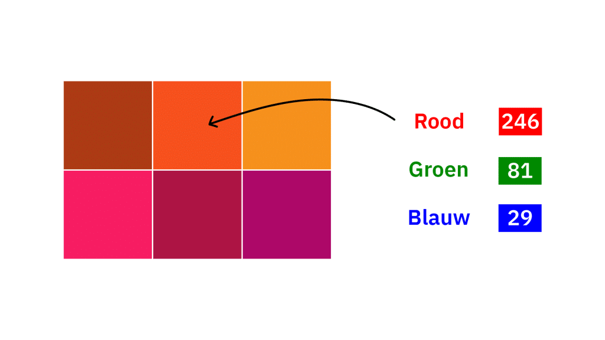

uitleg over kleurmodellen
Kleurmodellen zie je overal.
De 2 belangrijkste kleurmodellen zijn RGB en CMYK.
RGB is op digitale displays en werkt door de 3 primaire kleuren te laten zien met lampen.
Door de helderhheid van de lampen de veranderen zie je verschillende soorten kleuren.
CMYK is niet alles digitaal, het wordt gebruik door te printen met kleuren als:
cyaan, magenta, geel en zwart. Met deze kleure kan je makkelijk kleur op papier maken.
Meer Informatie

uitleg video kleurmodellen